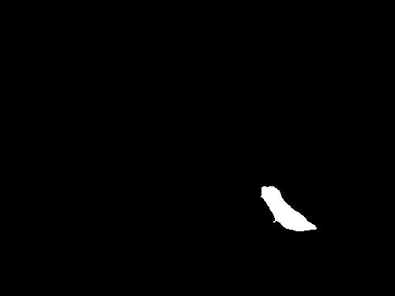
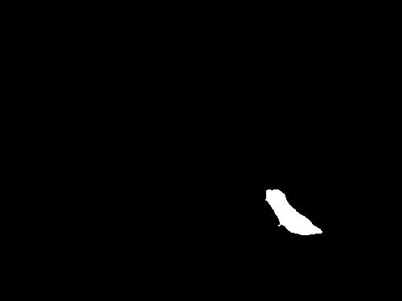

Skills: Tensorflow, OpenCV, Matplotlib, NumPy
Image Segmentation with HRNet
Aim of the Project
The objective of this project is to segment images of birds and squirrels using the HRNet model for object segmentation. Two functions, generate_bird_masks and generate_squirrel_masks, process selected images, creating masks for birds and squirrels, respectively. Additionally, the project includes visualization of the segmentation results, showing the original images, and masked images around the detected objects.
Implementation Overview
The project employs the HRNet model, loaded using TensorFlow Hub, to perform object segmentation on images of birds and squirrels. The model is selected based on its efficiency in capturing detailed object boundaries.
Above image provided is a diagram of a typical semantic segmentation network architecture. Semantic segmentation is a type of image analysis that
involves dividing an image into multiple segments or regions, each of which corresponds to a different object or part of the image.
This is useful for identifying and analyzing objects in an image, and is often used in computer vision and image recognition applications.
The diagram shows the different layers of the network, including the convolution layer, activations, de-convolution layer, pooling layer,
and un-pooling layer. These layers help the network learn and identify different features in the image, and ultimately, segment the image
into different regions.
Let's break down the components:
Convolution Layer: This layer applies a set of filters to the input image to create a feature map.
This helps the network learn local features of the image.
Activations: These are functions that introduce non-linearity into the network,
allowing it to learn complex patterns. The most common activation function is the Rectified Linear Unit (ReLU).
Pooling Layer: This layer reduces the spatial dimensions of the input, making the network less sensitive
to the exact location of features in the image.
De-convolution Layer: Also known as transposed convolution, this layer upsamples the input to a higher resolution,
allowing the network to make more precise predictions about the location of objects in the image.
Un-pooling Layer: This layer reverses the effect of a previous pooling layer, restoring the input to its original size.
The image on the left is an example of an input image, in this case, a bird feeder.
The semantic segmentation network would take this image as input and output a segmented version of the image,
where each pixel is labeled with the object it belongs to.
Semantic segmentation is extensively used in various fields like automatic driving, human-computer interaction,
augmented reality, and medical imaging. It allows these systems to understand the context of the scene better
by identifying individual objects and their boundaries.
Technical Details
To achieve the goal, the following steps are taken:
- Bird Image Segmentation:
- Squirrel Image Segmentation:
- Mixed Compositions and Ongoing Optimization
HRNET
HRNet, or High-Resolution Net, is a convolutional neural network that excels in tasks requiring precise spatial information, such as image segmentation. Here are some key details about HRNet:
Above image is a flowchart that illustrates High-Resolution Net image segmentation process using a diffusion model. Here’s a step-by-step breakdown of the process as depicted in the image:
High-Resolution Representations: Unlike traditional methods that recover high-resolution representations from low-resolution representations, HRNet maintains high-resolution representations throughout the model. This is crucial for tasks like image segmentation where detailed spatial information is required.
Parallel Multi-Scale Streams: The model starts from a high-resolution subnetwork and gradually adds parallel high-to-low resolution subnetworks. These multi-resolution subnetworks provide rich information at multiple scales.
Repeated Multi-Resolution Fusions: The network consists of several stages, and the nth stage contains n subnetworks corresponding to n resolutions. The authors conduct repeated multi-resolution fusions by exchanging information across parallel multi-resolution subnetworks. The terms “image features” and “category queries” are mentioned at the bottom, indicating types of input data.
In the context of image segmentation, HRNet can effectively capture fine details and complex textures, making it a preferred choice for achieving higher accuracy. This is largely due to its unique architecture that maintains high-resolution representations through the entire network, and its use of parallel multi-resolution subnetworks which provide rich information at multiple scales.
HRNet Model for Object Segmentation
The project employs the HRNet model, loaded using TensorFlow Hub, to perform object segmentation on images of birds and squirrels. The model is selected based on its efficiency in capturing detailed object boundaries.
def load_hrnet_model():
hub_model = tfhub.load('https://tfhub.dev/google/HRNet/coco-hrnetv2-w48/1')
return hub_model
1. Bird Image Segmentation:
The generate_bird_masks function processes selected bird images, generates masks, and saves
them along with bounding box visualizations.
The process involves preprocessing images, making predictions using the HRNet model,
creating masks based on predictions, and saving the resulting masked images.
Code:
def generate_bird_masks(bird_folder, selected_birds, mask_folder, hub_model):
os.makedirs(mask_folder, exist_ok=True)
for image_file in selected_birds:
# Read and preprocess the image
image_path = os.path.join(bird_folder, image_file)
bird_image = cv2.cvtColor(cv2.imread(image_path), cv2.COLOR_BGR2RGB)
# Make predictions using the model
predictions = hub_model.predict([bird_image.astype(np.float32) / 255.])
# Create a mask image
mask = np.squeeze(predictions)[:, :, 17] > 0.1
mask_image = np.zeros_like(bird_image) # Initialize mask with black pixels
if np.any(mask):
mask_image[mask] = [255, 255, 255] # Set masked pixels to white
# Save the mask image as JPEG
mask_file = os.path.join(mask_folder, f'mask_{image_file[:-4]}.jpg')
mask_image_pil = Image.fromarray(mask_image)
mask_image_pil.save(mask_file, format='JPEG')
# Find contours of the mask
contours, _ = cv2.findContours(mask.astype(np.uint8), cv2.RETR_EXTERNAL, cv2.CHAIN_APPROX_SIMPLE)
# Draw bounding boxes around the contours
bbox_image = bird_image.copy()
for contour in contours:
x, y, w, h = cv2.boundingRect(contour)
cv2.rectangle(bbox_image, (x, y), (x + w, y + h), (0, 255, 0), 2)
Result Visualization:
Present a side-by-side comparison of generated images, highlighting both
successful outcomes and instances where the model struggled to separate the object.
 

2. Squirrel Image Segmentation:
The generate_squirrel_masks function similarly processes selected squirrel images, generates masks, and saves them with bounding box visualizations. Image preprocessing, model prediction, mask creation, and saving are repeated for squirrel images.
Code:
def generate_squirrel_masks(squirrel_folder, selected_squirrels, mask_folder, hub_model):
os.makedirs(mask_folder, exist_ok=True)
for image_file in selected_squirrels:
# Read and preprocess the image
image_path = os.path.join(squirrel_folder, image_file)
squirrel_image = cv2.cvtColor(cv2.imread(image_path), cv2.COLOR_BGR2RGB)
# Make predictions using the model
predictions = hub_model.predict([squirrel_image.astype(np.float32) / 255.])
# Create a mask image
mask = np.squeeze(predictions)[:, :, 18] > 0.1
mask_image = np.zeros_like(squirrel_image) # Initialize mask with black pixels
if np.any(mask):
mask_image[mask] = [255, 255, 255] # Set masked pixels to white
# Save the mask image as JPEG
mask_file = os.path.join(mask_folder, f'mask_{image_file[:-4]}.jpg')
mask_image_pil = Image.fromarray(mask_image)
mask_image_pil.save(mask_file, format='JPEG')
Result Visualization:
Present a side-by-side comparison of generated images, highlighting both
successful outcomes and instances where the model struggled to separate the object.


Numerical Assessment:
| Successful Bird Segmentation: | Successful Squirrel Segmentation: |
|---|---|
| 80% | 90% |
I've encountered captivating scenarios featuring a delightful mix of both birds and squirrels sharing the same frame. This unique challenge has prompted me to acknowledge and address the intricacies of mixed compositions.
Understanding the significance of refining segmentation parameters, I am actively engaged in ongoing optimization efforts. By experimenting with the HRNet model, I aim to elevate segmentation capabilities, ensuring a more precise and nuanced separation of distinct objects within the images.